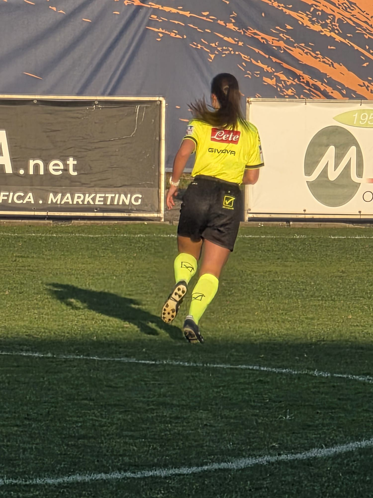
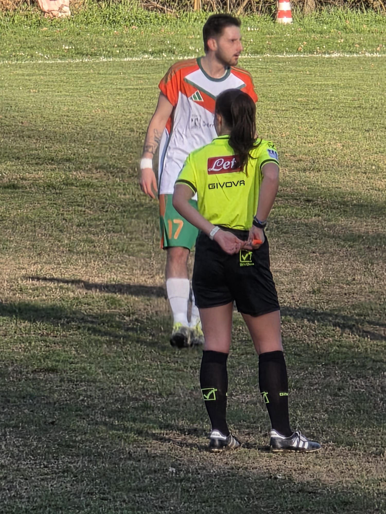
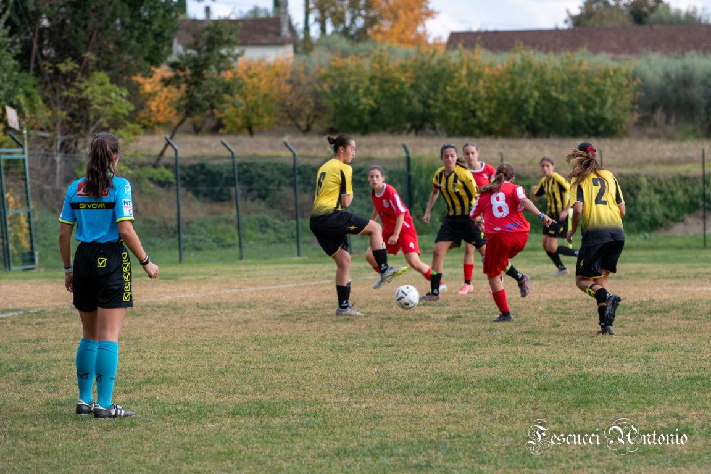
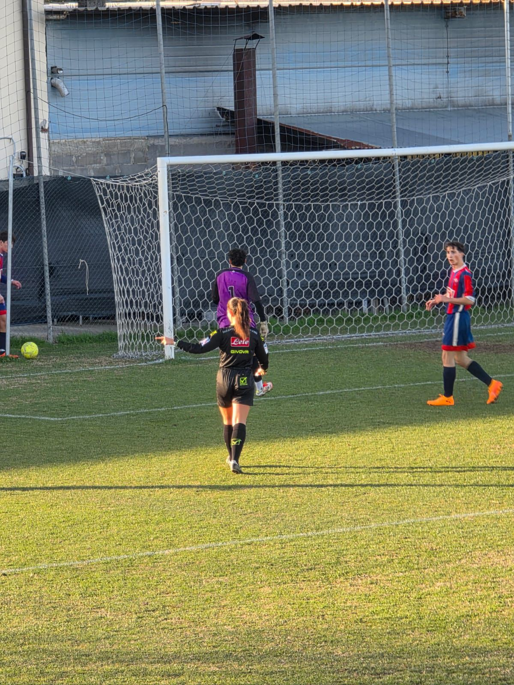
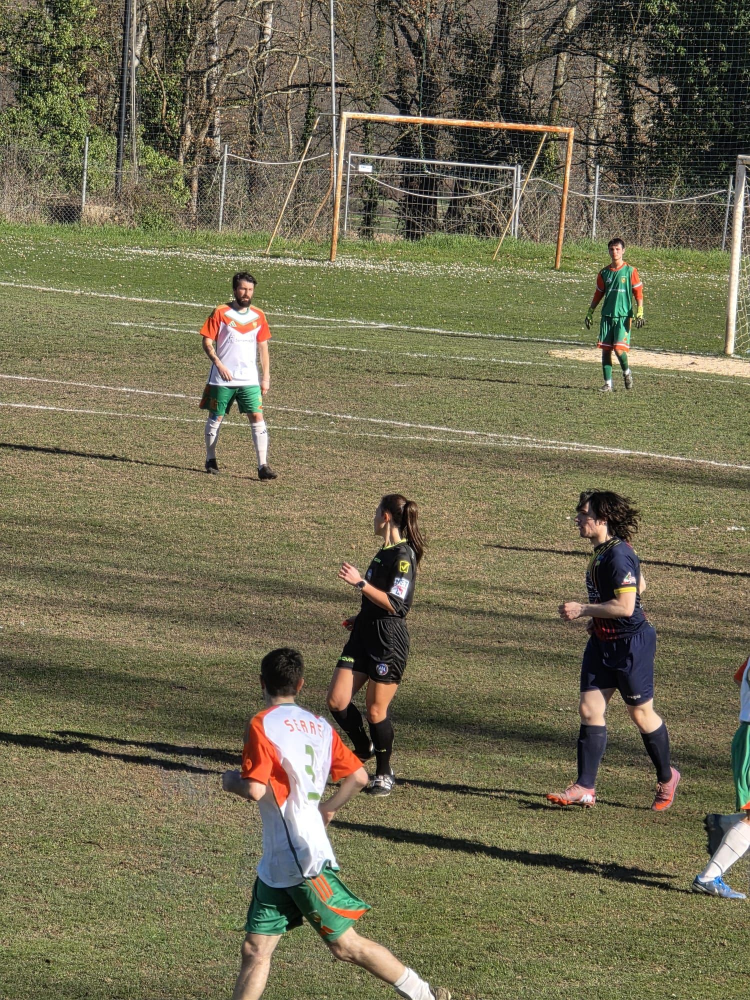
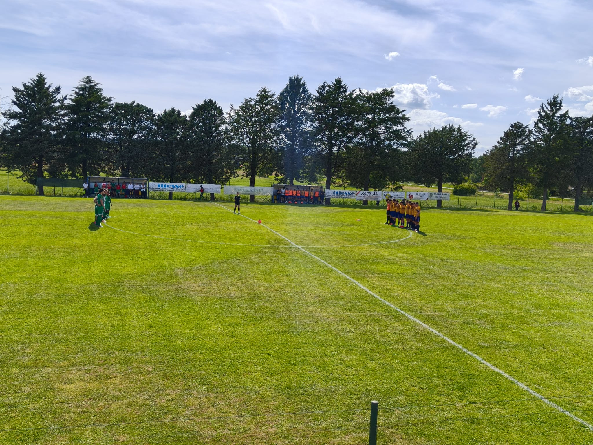
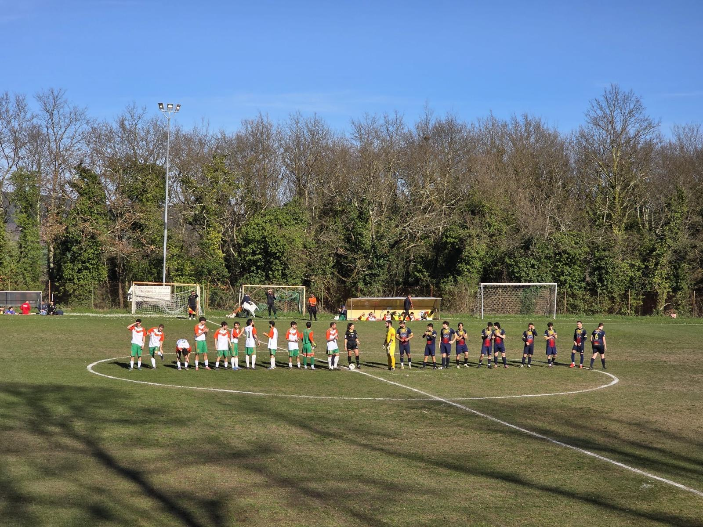

DOMENICA:





gara!
«Con il fischio di inizio tutte le paure diventano concentrazione, qualunque dubbio sparisce; ti accorgi di essere te, i giocatori e il pallone come tutte le domeniche, non è cambiato nulla.
Le urla dalla tribuna diventano un rumore di sottofondo quasi come una melodia.
Te sei sicuro di te stesso, hai tutto sotto controllo.
I primi 15 minuti li utilizzi per capire la gara:
il livello della competizione, quali contatti è meglio fischiare e quali no, chi sono i giocatori da non perdere di vista e quale è lo schema di gioco utilizzato.
Fischio dopo fischio 45 minuti volano.
Nello spogliatoio inizi a sentire un po’ di stanchezza ma sei consapevole che la gara nel secondo tempo aumenterà di livello, aumenteranno la tenzioni sia in campo che fuori, tutti avranno fame di vittoria.»
Le urla dalla tribuna diventano un rumore di sottofondo quasi come una melodia.
Te sei sicuro di te stesso, hai tutto sotto controllo.
I primi 15 minuti li utilizzi per capire la gara:
il livello della competizione, quali contatti è meglio fischiare e quali no, chi sono i giocatori da non perdere di vista e quale è lo schema di gioco utilizzato.
Fischio dopo fischio 45 minuti volano.
Nello spogliatoio inizi a sentire un po’ di stanchezza ma sei consapevole che la gara nel secondo tempo aumenterà di livello, aumenteranno la tenzioni sia in campo che fuori, tutti avranno fame di vittoria.»


«Anche te devi avere fame di vittoria perché la gara non è solo delle due squadre ma anche la tua.
Devi portati a casa la soddisfazione di un bel arbitraggio sicuro e imparziale oltre che di tanto divertimento.
Nel corso del secondo tempo dai tutto quello che ti resta sia a livello fisico che mentale:
la concentrazione è al massimo, le gambe corrono da sole e minuto dopo minuto, mantenendo sempre l’attenzione sulla gara, te la inizi a godere.
Gli ultimi minuti sono i più belli, la gara corre, te ne sei completamente immerso, può succedere di tutto… E’ ora che hai il picco di adrenalina.
Triplice fischio, è finita.»
Devi portati a casa la soddisfazione di un bel arbitraggio sicuro e imparziale oltre che di tanto divertimento.
Nel corso del secondo tempo dai tutto quello che ti resta sia a livello fisico che mentale:
la concentrazione è al massimo, le gambe corrono da sole e minuto dopo minuto, mantenendo sempre l’attenzione sulla gara, te la inizi a godere.
Gli ultimi minuti sono i più belli, la gara corre, te ne sei completamente immerso, può succedere di tutto… E’ ora che hai il picco di adrenalina.
Triplice fischio, è finita.»
⬅ Torna alla Home | Giorno successivo ➡